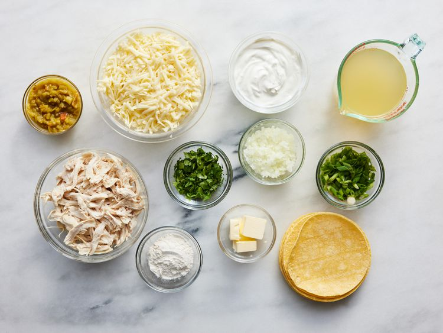
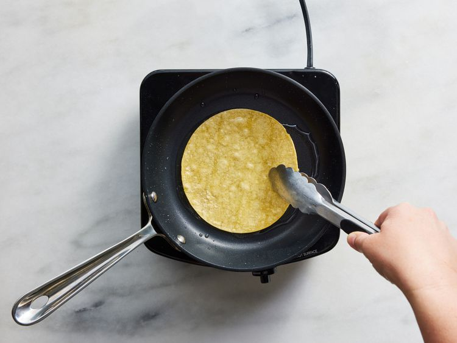
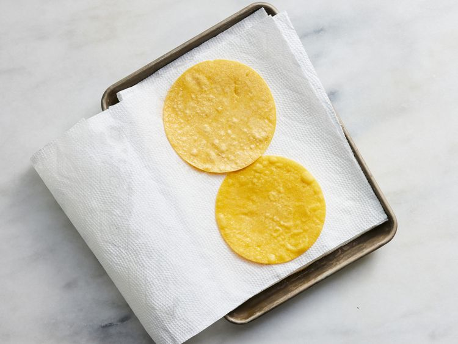
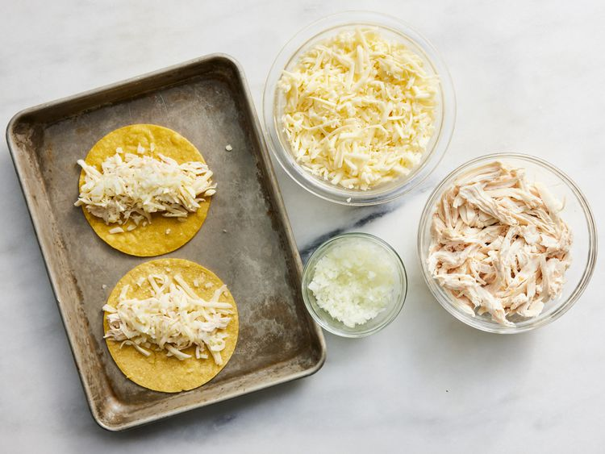
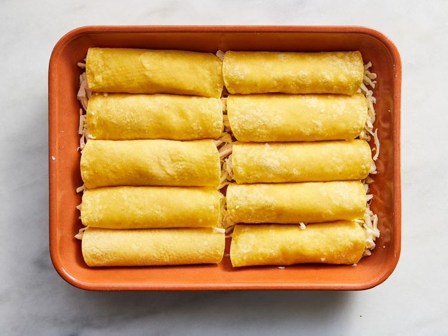
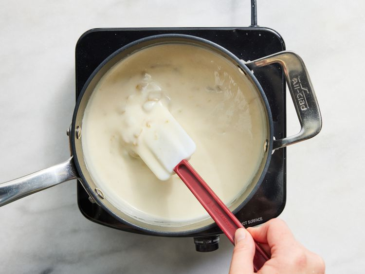
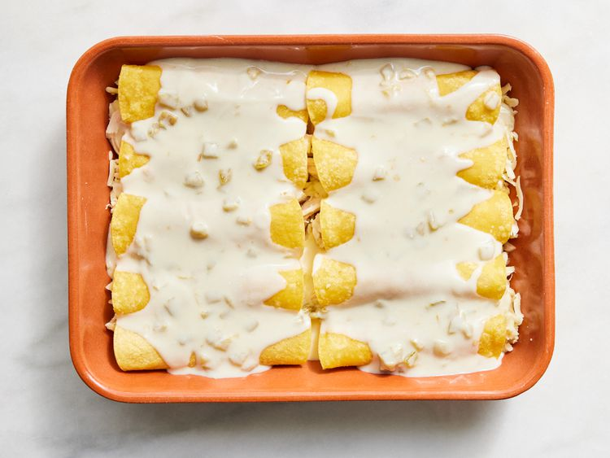

This recipe makes chicken- and cheese-filled corn tortillas baked under a creamy sauce infused with hot peppers. Adjust the amount of chopped chiles to suit your taste!
Gather all ingredients.

Preheat the oven to 375 degrees F (190 degrees C). Grease a 9x13-inch baking dish.
Combine pasta with tomatoes, cheese, salami, pepperoni, green pepper, olives, and pimentos in a large bowl. Pour in salad dressing; toss to coat.

Drain between layers of paper towel and keep warm.

Divide chicken, 10 ounces Monterey Jack cheese, and onion among 12 tortillas.

Roll up each tortilla and place seam-side down in the prepared pan.

Melt butter in a saucepan over medium heat. Add flour and whisk until mixture begins to boil. Slowly add chicken broth, stirring with a whisk until thickened. Mix in sour cream and green chiles, stirring occasionally. Heat thoroughly but do not boil.

Pour mixture over enchiladas.

Bake in the preheated oven until bubbly and heated through, about 20 minutes. Top with remaining Monterey Jack cheese and bake for 5 more minutes.
Garnish with chopped green onions and cilantro.
646 Calories 41g Fat 33g Carbs 38g Protein